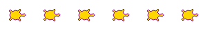
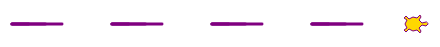
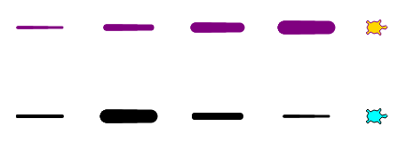

Turtle Properties¶
Once again, let’s create a test turtle called bob and then explore how to
change its appearance.
1 2 3 | import turtle
bob = turtle.Turtle()
|
Default turtle shape.¶
The turtle module contains methods that change the properties of either the
turtle object or the screen object. The table below lists some common methods
for changing the look of what gets drawn. Clicking on any of the keywords leads
to a more detailed description.
| Drawing | Pen Control | Screen Control |
|---|---|---|
| color() | pensize() | setup() |
| shape() | penup() | bgcolor() |
| speed() | pendown() | exitonclick() |
| fillcolor() | clear() | |
| begin_fill() end_fill() | reset() | |
| stamp() |
Feel free to experiment with the methods in the three editors below: drawing, pen control, screen control.
You can find links to a full list of turtle methods in the last section of this appendix.
Drawing Methods¶
Besides movement commands like forward and left, we can also change the
characteristics of the turtle object.
Turtle Color¶
To change the color of the lines, use the syntax:
turtle_name.color('color_name')
Python recognizes a large number of color names, which include standards like red, green, blue, cyan, as well as options like lightgreen, turquoise, skyblue, etc. The best way to tell if Python recognizes a color is to try!
Python also accepts a hex code instead of a color name. A hex code is a
6-character code that describes how to mix different amounts of red, green, and
blue to produce a specific color. The code must follow a # character.
Example
The following figure shows the result of giving bob different colors:
5 6 7 8 9 | bob.pensize(3) # Set the line thickness to 3 pixels.
bob.color('red')
bob.color('purple')
bob.color('light salmon') # Yeah, this is a color.
bob.color('#3c79b8') # Hex code for smokey blue.
|
To see a list of color names that Python recognizes, check out the Trinket documentation, which provides an easy grid structure. If none of the colors shown appeal to you, remember that hex codes let you tinker with the color until you find the exact shade you want.
Fill Color¶
Turtles can also fill the shapes they draw with a particular color. By default,
the fill color and line color are the same, so bob.color('blue') draws blue
lines and fills shapes with that color.
To change the fill color, use the syntax:
turtle_name.fillcolor('color_name')
Just like with the color method, fillcolor recognizes specific color
names, and it also accepts hex codes. Note that the line and fill colors are
both represented by the turtle image on the screen.
Examples
The following figure shows the result of giving bob different fill
colors. In each case, the line color is black.
5 6 7 8 9 | bob.pensize(3) # Set the line thickness to 3 pixels.
bob.fillcolor('violet')
bob.fillcolor('yellow')
bob.fillcolor('white smoke') # Yeah, this is a color.
bob.fillcolor('#419f6a') # Hex code for summer green.
|
Tip
We can use the color method to set BOTH the line and fill color by
using two parameters instead of one.
5 6 7 8 9 | bob.pensize(3) # Set the line thickness to 3 pixels.
bob.color('black', 'pink') # Set black line color and pink fill color.
bob.color('purple', 'gold')
bob.color('tomato', 'skyblue')
bob.color('#3c79b8', '#419f6a') # Hex codes for smokey blue and summer green.
|
Turtle Shape¶
The Python library offers six choices for a turtle’s shape—‘arrow’, ‘circle’, ‘classic’, ‘square’, ‘triangle’, and ‘turtle’. By default, turtles begin with the ‘classic’ shape.
Arrow, circle, classic, square, triangle, turtle.¶
To set the shape for a turtle object, we use the syntax:
turtle_name.shape('shape_name')
shape_name must be one of the six options, and it must be in quotes. For
example, bob.shape('circle') changes bob from its default shape to a
circle.
Classic turtle shape + line vs. circle shape + line.¶
Turtle Speed¶
To set how quickly a turtle draws, use the syntax:
turtle_name.speed(speed_value)
speed_value can be set to any integer from 1 (slowest) - 10 (fastest).
Setting speed_value to 0 skips the drawing animation and instantly shows
the finished shape on the screen.
Fill a Drawing¶
To fill the design drawn by a turtle, use the syntax:
turtle_name.begin_fill()
# Drawing code
turtle_name.end_fill()
Once the drawing code between begin_fill() and end_fill() completes,
Python shades the design with the turtle’s current fill color.
Example
Note how the placement of drawing commands between begin_fill() and
end_fill() affects the coloring.
5 6 7 8 9 10 11 12 13 | bob.begin_fill()
bob.circle(100, 180) # Draw a half circle.
bob.circle(100, 180) # Draw another half circle.
bob.end_fill()
bob.begin_fill()
bob.circle(100, 180) # Draw a half circle.
bob.end_fill()
bob.circle(100, 180) # Draw another half circle.
|
Making a Stamp¶
The stamp() method leaves a print of the turtle’s shape on the page.
Compare the results of the two code samples below. Each turtle draws a line
that is 200 pixels long.
5 6 7 8 9 10 11 | bob.forward(100)
bob.forward(100)
mae.stamp()
mae.forward(100)
mae.stamp()
mae.forward(100)
|
Notice how the second line shows where the turtle mae left an imprint (a
stamp) on the drawing before moving to the next position.
Try It! (Drawing)¶
In the editor below, use the color, shape, speed, stamp, and filling methods to do the following:
- Change the turtle shape, line color, and fill color.
- Try several different speed values from 0 - 10.
- Move the
begin_fill()andend_fill()statements around to see how their location in the code affects the drawing. Also, feel free to add or removebegin_fill/end_fillpairs. - Leave stamps at different points on the drawing.
Pen Control¶
Other methods determine how a turtle draws lines or leaves other marks on the screen.
Line Thickness (Pen Size)¶
To change the thickness of the lines drawn, use the syntax:
turtle_name.pensize(value)
value sets the number of pixels, and it can be any positive number. The
larger the value, the thicker the lines. By default, turtles start with a
pensize of 1.
Penup and Pendown¶
Two methods control whether or not a turtle draws a line behind itself when it moves:
turtle_name.penup()
turtle_name.pendown()
The penup() method tells a turtle to lift up its tail. Any movement
commands that follow will reposition the turtle but NOT draw any lines.
The pendown() method does the opposite, drawing lines behind the turtle as
it moves. The pendown state is the default whenever a new turtle is
created.
Clear and Reset¶
To erase a turtle’s drawings from the screen, use the syntax:
turtle_name.clear()
# OR
turtle_name.reset()
Both methods remove only the drawings made by the selected turtle. clear()
keeps settings like color, line thickness, and position the same. reset()
re-centers the turtle on the page and returns most of its properties to their
default values.
Example
Watch below as clear and reset are applied to two of the turtles.
Which turtle uses clear(), and which one uses reset()?
Try It! (Pen)¶
In the editor below, use the pen control methods to do the following:
Draw a row of turtle stamps.
Draw a dashed line.
Make the dashes different thicknesses (e.g. steady increase, steady decrease, or no pattern).

Challenge: Bring in the fill methods to try to make something that looks like this:
{kind=link}
Screen Control¶
Several methods adjust the drawing space. To use these methods, we must first define a screen variable.
Just like we defined bob as a turtle object, we can define the screen
variable to control the drawing space.
1 2 3 | import turtle
screen = turtle.Screen()
|
Set Up¶
To set the width and height of the drawing space, use the syntax:
screen_name.setup(width, height)
Both width and height must be integers, and they each represent a
number of pixels.
Sometimes width or height will be larger than what a device can
display. In this case, the drawing window will include scroll bars to allow the
user to view the entire area.
Background Color¶
To change the background color of the drawing space, use the syntax:
screen_name.bgcolor('color_name')
Just like the color and fillcolor
methods, Python accepts color names and hex codes for color_name.
Exit On Click¶
By default, Python closes the turtle window immediately after the program ends, which means any cool graphics get lost before we can fully appreciate them. To prevent this, add a statement at the end of the program that tells Python to pause before closing the window.
screen_name.exitonclick()
exitonclick() causes the turtle window to stay open until the user clicks
somewhere inside that space.
Try It! (Screen)¶
In the editor below, run the program as-is first, then use the screen control methods to do the following:
- Change the background color of the drawing space.
- Change the width of the drawing space. For your device, how large can you make the width before a scroll bar appears?
- Change the height of the drawing space. For your device, how large can you make the width before a scroll bar appears?
- Note the default starting position for
bobwith each new screen size. - Note what happens when you click inside and outside of the drawing space.